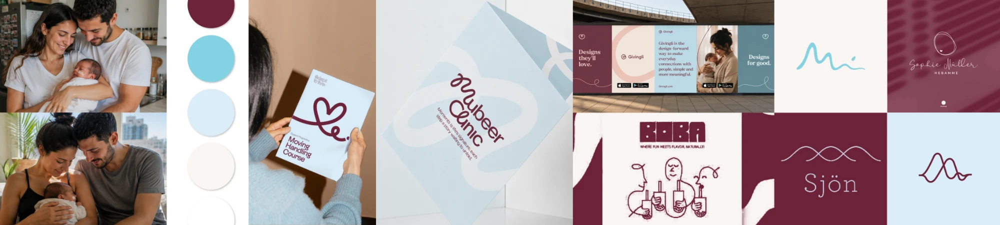
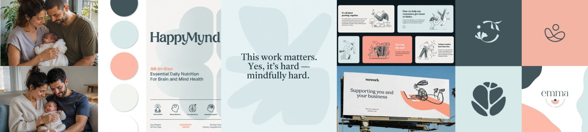
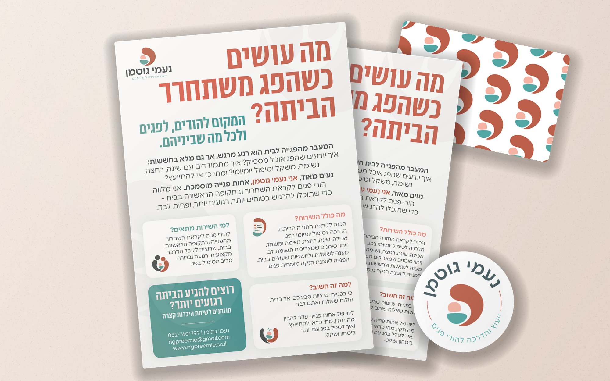
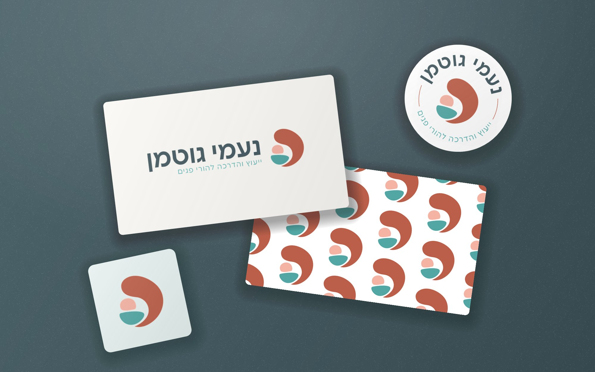
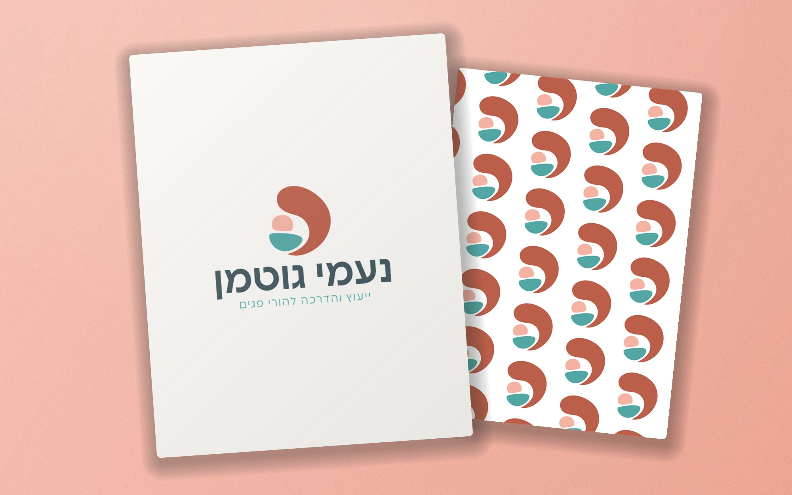

הפלאייר: נקודת המפגש הראשונה
מגיע להורים דרך מחלקות הפגייה, ופותח בשאלה שמעסיקה אותם באותו רגע: "מה עושים כשהפג משתחרר הביתה?"
 לסיפור המלא
לסיפור המלא
קייס סטאדי
לתת לביטחון מקום גם אחרי הפגייה
איך הופכים ניסיון מקצועי של אחות פגייה למותג שמעניק להורי פגים תחושה של רוגע וביטחון - דווקא ברגע שבו הם חוזרים הביתה? זה היה האתגר שעמד בבסיס הפרויקט.
נעמי גוטמן היא אחות מוסמכת עם ניסיון בעבודה בפגייה, שזיהתה פער משמעותי בליווי של הורי פגים. במהלך האשפוז ההורים מוקפים בצוות רפואי שזמין לשאלות ולחששות. אבל כשהתינוק משתחרר הביתה, האחריות עוברת אליהם - ואיתה מגיעים חוסר ודאות, פחד והמון שאלות יומיומיות.
נעמי החליטה להקים שירות ליווי אישי שייתן להורי פגים מענה מקצועי, מעשי ואנושי בתקופת המעבר הביתה.
התפקיד שלי היה לקחת את הרעיון הזה ולהפוך אותו למותג שלם: כזה שמצליח לשדר מקצועיות רפואית לצד חום אישי, ולתת לנעמי תשתית אמיתית להתחיל לפעול.

רוגע
וביטחון

הבריף
נעמי נכנסה לשוק עם שירות חדש, בלי מותג מבוסס או תשתית שיווקית קיימת. היא הייתה צריכה להציג את עצמה בפני 2 קהלים: הורי פגים שמחפשים תמיכה וביטחון, וצוותים רפואיים שעשויים להפנות אליה משפחות.
בגלל הרגישות של התחום, נראות מקצועית לבדה לא הספיקה. המותג היה צריך להעביר גם תחושה של קרבה, הכלה והבנה אמיתית של מה שההורים עוברים.
ליצור מותג שמחבר בין ידע רפואי לנוכחות אנושית מרגיעה, ולבנות עבור נעמי ערוצים שיאפשרו לה להציג את השירות, לעורר אמון ולהתחיל לקבל פניות.
מכיוון שנעמי לא תכננה לתחזק נוכחות פעילה ברשתות החברתיות, האתר והפלאייר היו צריכים למלא תפקיד מרכזי במפגש הראשוני עם הקהל.
הורי פגים
שמחפשים ביטחון
צוותים רפואיים
שמפנים משפחות
מסר הליבה:
רוגע וביטחון
ההורים לא מחפשים רק תשובות מקצועיות.
הם צריכים להרגיש שמישהי מבינה אותם.
המחקר והאסטרטגיה
את התהליך התחלתי בשיחת עומק עם נעמי, כדי להבין לא רק מה השירות שהיא רוצה להציע, אלא גם מה הוביל אותה להקים אותו.
משם המשכתי למחקר ולבניית אסטרטגיית מותג: בחנתי את קהל היעד, החששות והצרכים של הורי פגים, את המתחרים ואת ההזדמנות לייצר מיצוב ברור בשוק.
מתוך התהליך התחדדה התובנה המרכזית: ההורים לא מחפשים רק תשובות מקצועיות. הם צריכים גם להרגיש שיש מישהי שמבינה את הסיטואציה שלהם, מקשיבה להם ויכולה לעזור להם לפעול בביטחון.

ה-DNA של המותג
מכאן הגדרתי את ה-DNA של המותג ב-2 מילים: רוגע וביטחון.
הן הפכו לעיקרון שמוביל את ההחלטות בהמשך - מהמסרים ועד השפה הגרפית וחוויית האתר.
שיטת הזרה
לפני הסקיצות אני כותבת שני מעגלים. במעגל הפנימי – כל מה שעולה מיד כשמדברים על העסק. במעגל החיצוני – מילים שקשורות, אבל לא בצורה שחושבים עליה ישר.
משם מגיעים הרעיונות שלא נראים כמו כל השאר בתחום.
הכיוונים היצירתיים
בשלב גיבוש הכיוון הוויזואלי יצרתי 2 לוחות מיקוד. הכיוון הראשון עסק בדימוי של תדר או גל מוניטור - מעין תדר משותף בין ההורים לתינוק. הכיוון השני עסק במשפחה: לא בהכרח מושלמת, אבל שלמה בדרכה.
נעמי התחברה לשני הכיוונים, והתחלתי לפתח סקיצות ללוגו מתוך שניהם.
במהלך העבודה הבנתי שיש בעיה בכיוון הרפואי. אף שהמוניטור והאינקובטור הם חלק מהעולם של הפגייה, הם עלולים להזכיר להורים רגעים של מתח וחרדה. לא רציתי שהלוגו יחזיר אותם לחוויה הרפואית המלחיצה, אלא יציע להם תחושה אחרת.
במקום להתמקד במכשור, בחרתי להתמקד בקשר האנושי: הרגע שבו אם מחזיקה את התינוק שלה. לקחתי תמונת השראה של אם ותינוק ופישטתי אותה לאיור מופשט ורך. מתוך הצורות האלה התפתח הלוגו הסופי, ובהמשך גם השפה הגרפית של המותג.


זו הייתה נקודת המפנה: מסמל שמייצג את עולם הפגייה, לסמל שמייצג את התחושה שנעמי רוצה להעניק.
הפתרון העיצובי
לאחר בחירת הכיוון, בניתי מערכת ויזואלית שממשיכה את הרעיון של הלוגו: צורות אורגניות, קווים רכים וקומפוזיציות נקיות שמאפשרות לתוכן לנשום.
פלטת הצבעים משלבת גוונים חמים עם טורקיז וגוון כהה שמוסיף יציבות. האיזון הזה נועד לחבר בין 2 הצדדים של המותג: מקצועיות רפואית ותחושה אישית, נגישה ומרגיעה.
גם האייקונים והשפה הגרפית פותחו כחלק מאותה מערכת, כדי לשמור על עקביות בין האתר, הפלאייר ושאר חומרי המותג.
הבחירה במינימליזם לא הייתה רק אסתטית. היא נבעה מההבנה שקהל היעד נמצא בתקופה עמוסה רגשית, ולכן חשוב שהמידע יהיה ברור, נגיש ולא מציף.

פלטת הצבעים המרכזית מתוך ספר המותג.
ההחלטות והיישומים
מסלול מתוכנן, לא נתון המרה שנמדד.
מגיע להורים דרך מחלקות הפגייה, ופותח בשאלה שמעסיקה אותם באותו רגע: "מה עושים כשהפג משתחרר הביתה?"
במקום רשתות חברתיות - אתר שמספר את הסיפור של נעמי, מסביר את השירות בשפה פשוטה ומציג המלצות של משפחות שליוותה.
מערכת לניהול לקוחות, תשלומים והפניות שפיתחתי בעזרת Claude Code - עם לוח שנה עברי ומבנה שמתאים לדרך שבה נעמי עובדת.


התוצאה הסופית
בסיום הפרויקט נעמי קיבלה מערכת מותגית ועסקית שמחברת בין המסר, הנראות והכלים הדרושים לתחילת הפעילות. הזהות הוויזואלית מעניקה לשירות אופי ברור ועקבי, האתר מאפשר להורים להכיר את נעמי, הפלאייר יוצר נקודת מפגש במקום שבו הצורך מתעורר, ומערכת הניהול תומכת בעבודה היומיומית שלה.
מבחינתי, התוצאה היא לא רק מותג שנראה מקצועי, אלא תשתית שמאפשרת לנעמי להציג את עצמה ואת השירות שלה בביטחון.




התוצאה העסקית
העסק של נעמי נמצא עדיין לפני ההשקה או בתחילתה, ולכן אין בשלב זה נתונים על פניות חדשות או לקוחות שהגיעו בעקבות האתר.
עם זאת, הפרויקט יצר שינוי משמעותי בנקודת הפתיחה שלה: היא יכולה להתחיל להציג את העסק באופן עקבי ומקצועי, בלי לבנות את כל התשתית מאפס.
השלב הבא יהיה לבחון איך התשתית הזאת תומכת בפניות, בהפניות מקצועיות ובהתפתחות העסק לאורך זמן.
מה נעמי אמרה
אחד הרגעים המשמעותיים עבורי בפרויקט היה התגובה של נעמי לתוצאה. לאורך הדרך היא נתנה בי אמון וחופש מקצועי להוביל את התהליך. כשהצגתי לה את העבודה, היא תיארה את עצמה כ-"Speechless" ואמרה שהתוצאה מעבר לכל מה שציפתה לו.
הפרויקט התחיל בצורך במיתוג, והתרחב לבניית חוויה שלמה - מהמסר הראשון שהורה פוגש ועד הכלים שבהם נעמי תנהל את העסק.
בואו נבנה לעסק שלכם מותג שגורם לאנשים הנכונים להבין מהר יותר למה דווקא אתם.
תשאירו פרטים ואחזור אליכם עד 2 ימי עסקים.